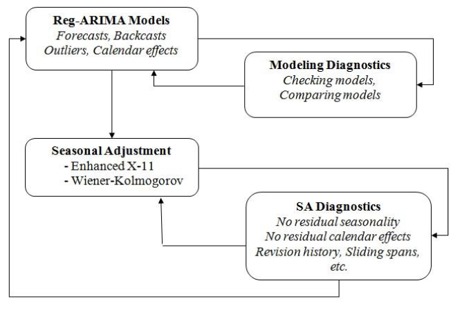
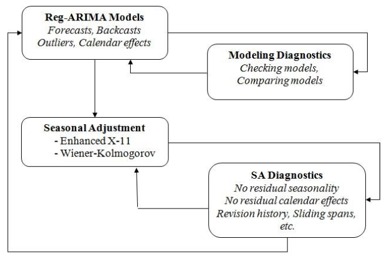

2 Brief history of seasonal adjustment methods
Revue de littérature sur les méthodes de désaisonnalisation, pourquoi on utilise JDemetra+, X-13/TRAMO-SEATS et pas d’autres méthodes
The most popular toto seasonal adjustment methods are TRAMO-SEATS1 (Gómez and Maravall 1996; Caporello and Maravall 2004), a parametric method based on ARIMA models, and X-13ARIMA2 (Findley et al. 1998; Ladiray and Quenneville 2001), a non-parametric method based on moving averages. Both methods are recommended by Eurostat and the European Central Bank (ECB) for adjusting economic indicators. These two methods proceed in two steps, summarized in figure @ref(fig:2-step-proc).

The first step, called pre-adjustment or linearisation, consists of pre-adjusting the time series by removing the deterministic effects and estimating missing observations. Next, in the second part of seasonal adjustment, called the decomposition, the pre-adjusted series is decomposed in order to determine the seasonal component. As a result of this process, the final seasonally adjusted series shall be free of seasonal and calendar-related movements.
The pre-adjustment step is very similar in X-13ARIMA and in TRAMO-SEATS (section @ref(sec:pre-adjustment)), whereas the decomposition differs between the two methods. In X-13ARIMA, the X-11 algorithm decomposes the time series by means of linear filters (section @ref(subsec:saX11)). In TRAMO-SEATS, SEATS (Signal Extraction in ARIMA Time Series) decomposes the observed series with a ARIMA-model based method (section @ref(subsec:saSeats})).
The program TRAMO-SEATS was developed by Gianluca Caporello and Agustin Maravall — with programming support from Domingo Perez and Roberto Lopez — at the Bank of Spain. It is based on the program TRAMO-SEATS, previously developed by Victor Gomez and Agustin Maravall.↩︎
The program X-13ARIMA is a produced, distributed, and maintained by the US-Census Bureau.↩︎